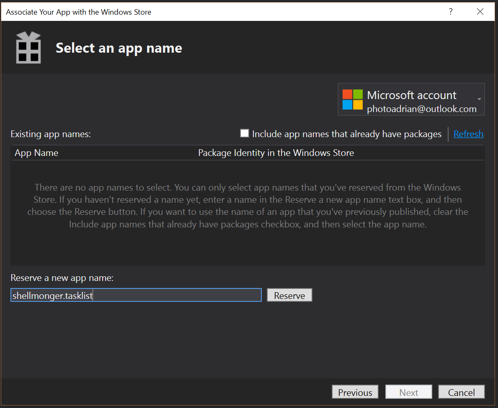
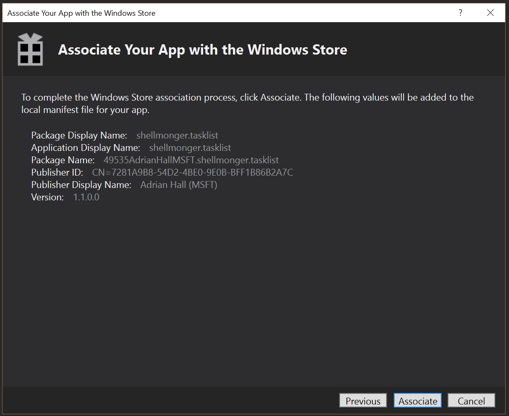
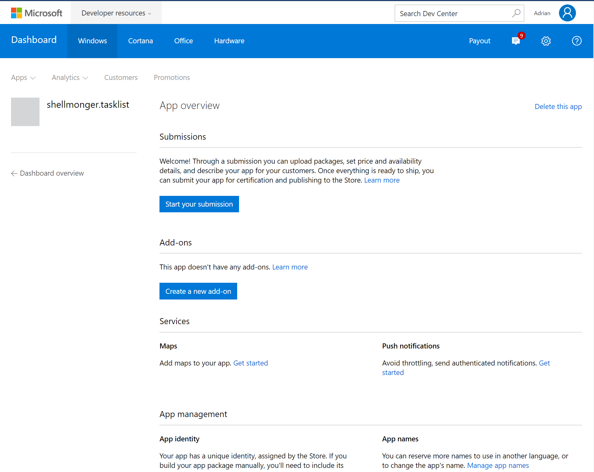
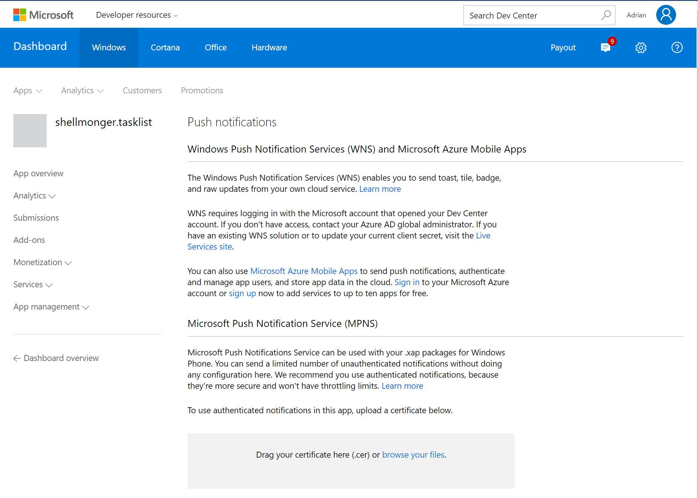
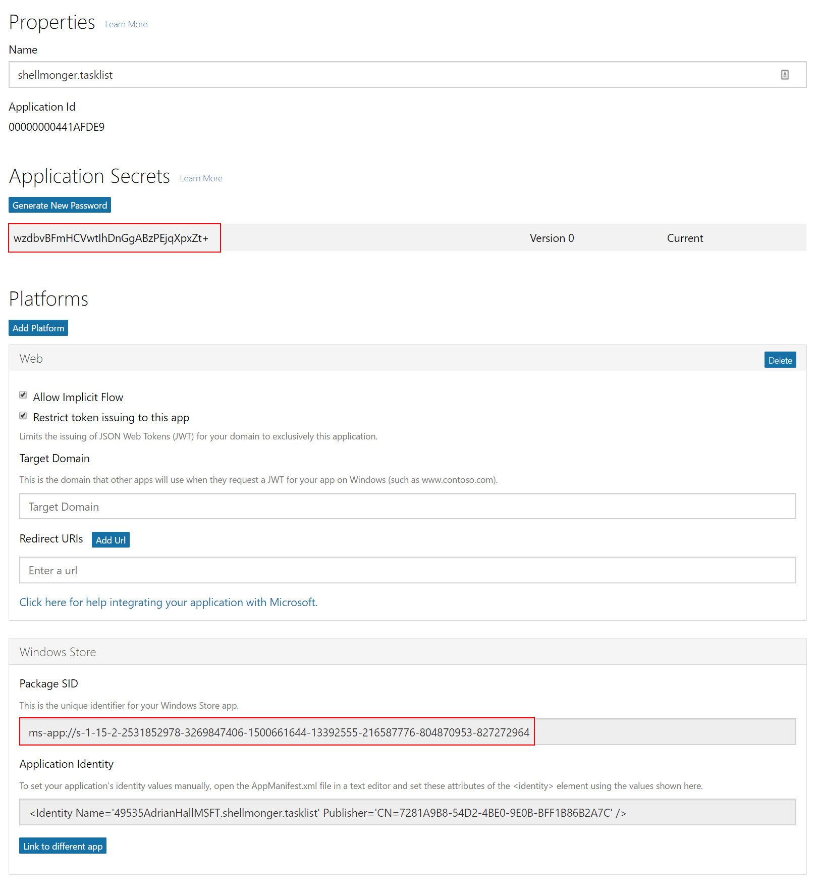
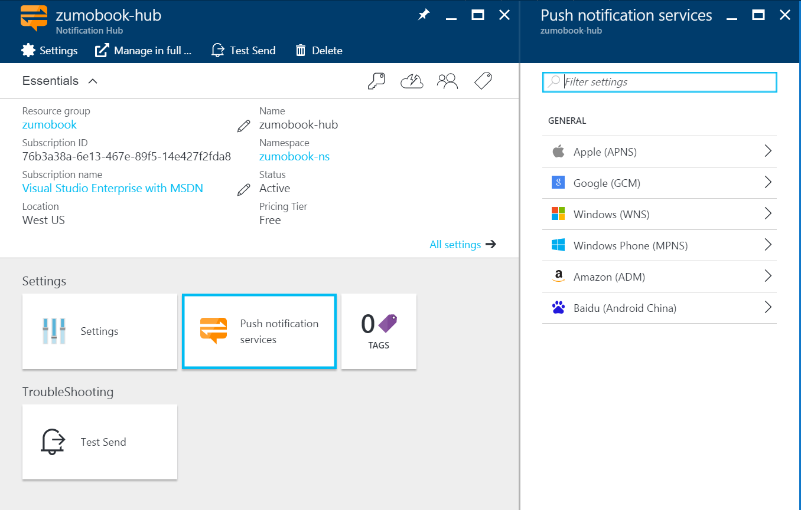
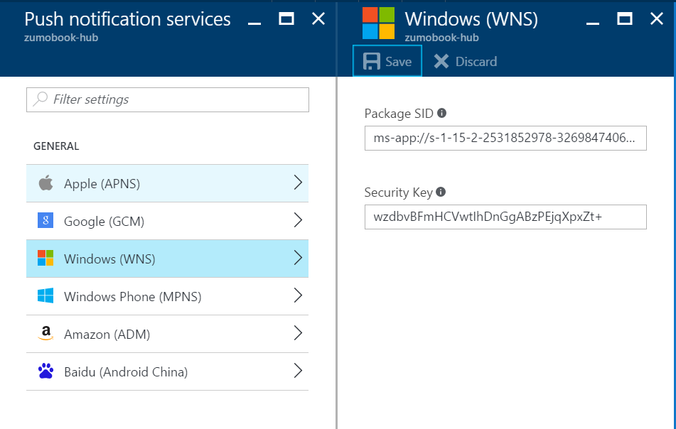

Windows Push
Push Notifications for Windows are handled by one of two services. Use the Microsoft Push Notification Service (or MPNS) for Windows Phone devices (not including Windows Phone 10). Use Windows Notification Service (or WNS) for Windows 10, including Phone, Universal Windows applications and Windows store applications. Inevitably, this will mean you are more interested in WNS than MPNS.
Registering with WNS¶
There are a few steps for registering with WNS:
- Apply for a Windows Developer Account.
- Register your application with the Windows Store.
- Configure Notification Hubs.
- Finally, add code to your project to register and handle push notifications.
If you are pushing to WNS, the application doesn't have to be a mobile app - it can be a Universal Windows app running on your laptop or desktop development computer. This makes dealing with push notifications much easier than you would expect.
Apply for a Windows Developer Account¶
The first thing you need is a Windows Developer Account. This is a paid account, but the account is a one-time cost. If you have an MSDN subscription, the account is free. Just go to the MSDN Website, log in and check your MSDN Subscription. Under My Account there is a section entitled Windows and Windows Phone developer accounts. Click on the Get Code link to get your registration code. When you are prompted for payment, there is a place to put the code for a free registration.
Warn
Use the same account as the account you use to sign in to Visual Studio.
Register your application with the Windows Store¶
To register your application with the Windows Store:
- Open your solution in Visual Studio
- Right-click the TaskList.UWP project, select Store > Associate App with the Store.
-
Click Next.

-
Enter a unique name for your app, then click Reserve.
-
Once the app list is updated, highlight the new app name, then click Next.

-
Click Associate.
This will create a Package.StoreAssociation.xml file. This file can easily be recreated by re-associating the app with the store. You should not check this file into source code control. If you use the .gitignore generator, then it is automatically added to your .gitignore file.
Add Push Notifications to your App registration¶
Using a web browser, navigate to the App Overview page on the Windows Developer Center. You will need to log in with the same account used for your Windows Developer Account. Click the application you just associated.

Click the Get started link under Push Notifications.

Click the Live Services site in the middle of the WNS section.

Leave this page open, but make a note of the two values I have highlighted. You will need these values when you register your WNS connection with the notification hub. You should never reveal these values to anyone as they will enable anyone to impersonate your applications to the WNS push notification system, allowing them to push to your users.
Configure Notification Hubs¶
The Notification Hubs configuration follows a similar pattern to the other push notification systems:
- Log on to the Azure portal.
-
Find your notification hub, then select Push notification services.

-
Enter the Package SID from the Live Services site for your app in the appropriate box.
- Enter the application secret from the Live Services site in the Security Key box.
-
Click Save.

The notification hub will be updated with your security credentials.
Tip
If you think your application secret has been compromised (or you publish it in a book), go back to the Live Services site and click Generate new password. Then click Activate next to your new application secret. Finally, click Save at the bottom of the page. Copy the new secret into the Security Key field of your notification hub configuration for WNS and click Save there to store the new security key.
Register for Push Notifications in your App¶
Edit the App.xaml.cs file in your TaskList.UWP project. Add the following code to the OnLaunched() method:
protected async override void OnLaunched(LaunchActivatedEventArgs e)
{
UWPPlatformProvider.Channel = await PushNotificationChannelManager
.CreatePushNotificationChannelForApplicationAsync();
// Rest of the OnLaunched method goes here
}
We have also made the OnLaunched() method asynchronous to accomodate the push notification channel manager. The PushNotificationChannelManager class is in Windows.Networking.PushNotifications. We are going to store the channel in the UWPPlatformProvider:
public static PushNotificationChannel Channel { get; set; } = null;
This will make the channel globally available to our push registration code.
Registering with Azure Mobile Apps¶
The registration code is also in the UWPPlatformProvider since it is part of the IPlatformProvider interface we have been using:
public async Task RegisterForPushNotifications(MobileServiceClient client)
{
if (UWPPlatformProvider.Channel != null)
{
try
{
var registrationId = UWPPlatformProvider.Channel.Uri.ToString();
var installation = new DeviceInstallation
{
InstallationId = client.InstallationId,
Platform = "wns",
PushChannel = registrationId
};
// Set up tags to request
installation.Tags.Add("topic:Sports");
// Set up templates to request
var genericTemplate = new WindowsPushTemplate
{
Body = @"<toast><visual><binding template=""genericTemplate""><text id=""1"">$(message)</text></binding></visual></toast>"
};
genericTemplate.Headers.Add("X-WNS-Type", "wns/toast");
installation.Templates.Add("genericTemplate", genericTemplate);
// Register with NH
var recordedInstallation = await client.InvokeApiAsync<DeviceInstallation, DeviceInstallation>(
$"/push/installations/{client.InstallationId}",
installation,
HttpMethod.Put,
new Dictionary<string, string>());
System.Diagnostics.Debug.WriteLine("Completed NH Push Installation");
}
catch (Exception ex)
{
System.Diagnostics.Debug.Fail($"[UWPPlatformProvider]: Could not register with NH: {ex.Message}");
}
}
}
The template used by WNS is slightly different. It is based on the regular PushTemplate used by iOS and Android, but it has an extra "Headers" field. You must specify the X-WNS-Type, which can be one of the following:
- wns/toast
- wns/tile
- wns/badge
- wns/raw
Each of these has their own properties and require a specific set of properties to be specified in the XML body. As a result of this configuration, you don't need to code anything to receive push messages - UWP already knows how to decode and display them. The WindowsPushTemplate is added to the Abstractions\DeviceInstallation.cs file:
public class WindowsPushTemplate : PushTemplate
{
public WindowsPushTemplate() : base()
{
Headers = new Dictionary<string, string>();
}
[JsonProperty(PropertyName = "headers")]
public Dictionary<string, string> Headers { get; set; }
}
Testing Notifications¶
You can send an appropriately formed test message to WNS within Visual Studio:
- Open the Server Explorer.
- Expand Azure > Notification Hubs.
- Double-click the notification hub.
- Select Windows (WNS) > Toast as the type.
- Change the body if required.
- Click Send.
The message will appear in the notification area as a "New Notification".